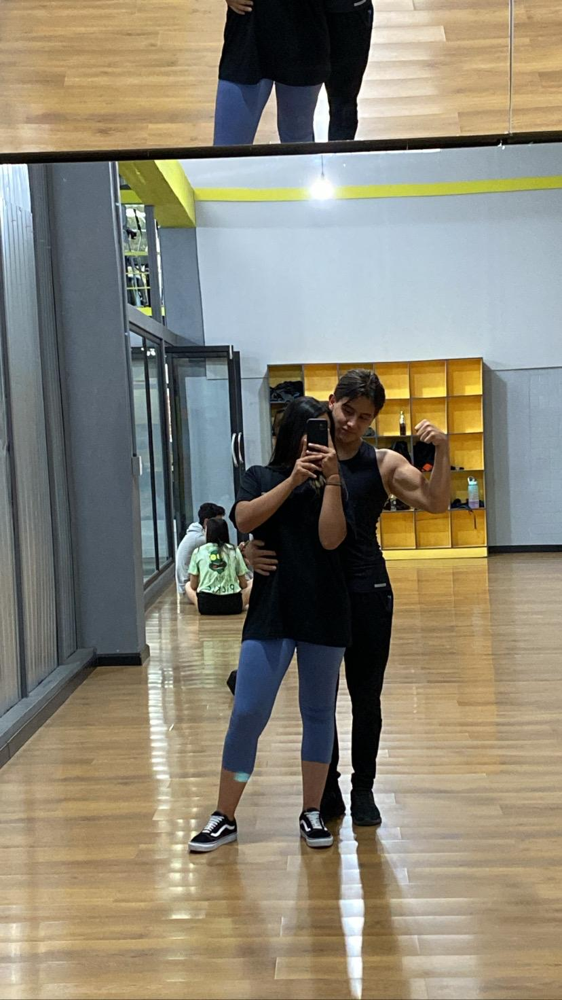
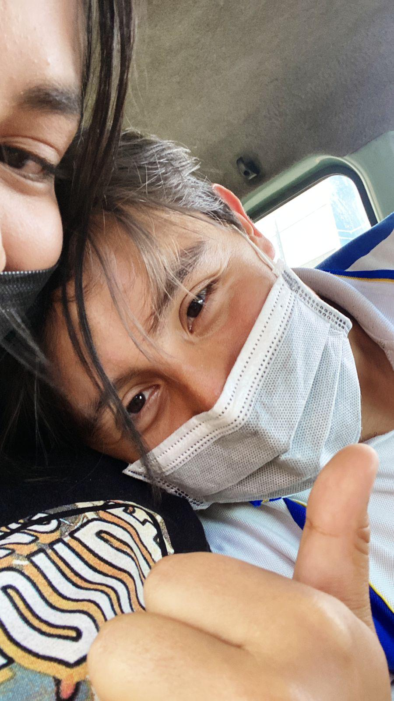
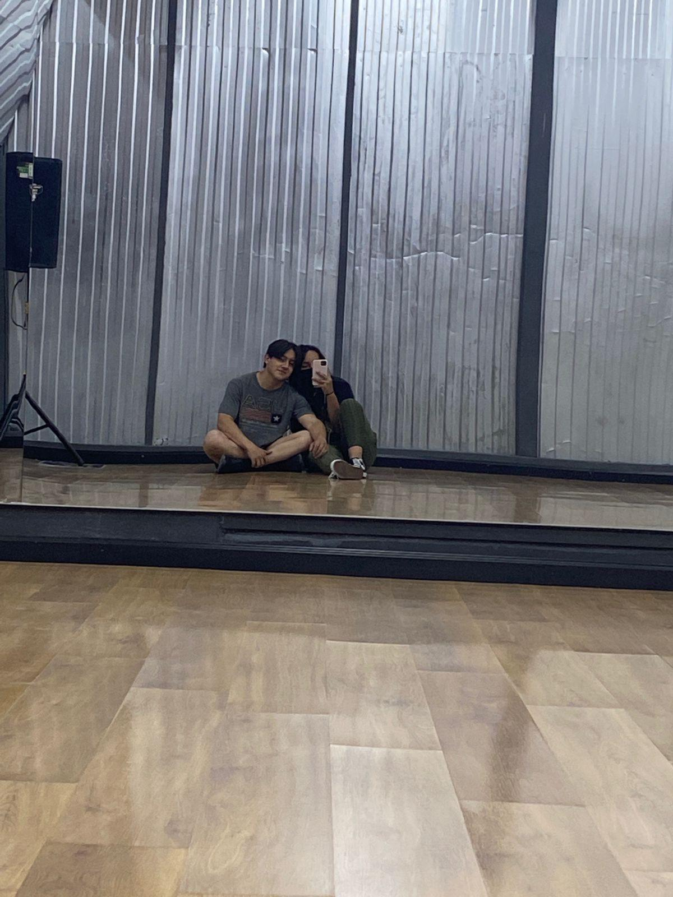
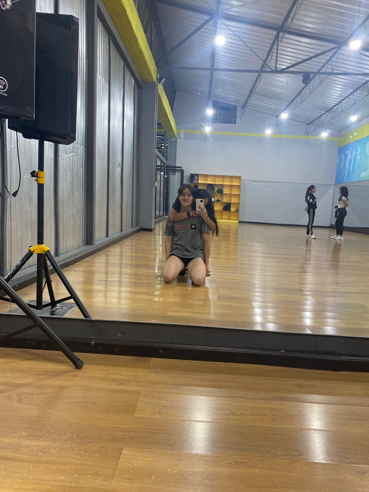
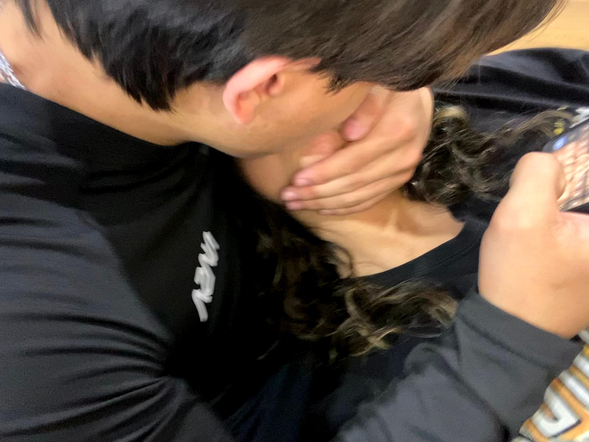
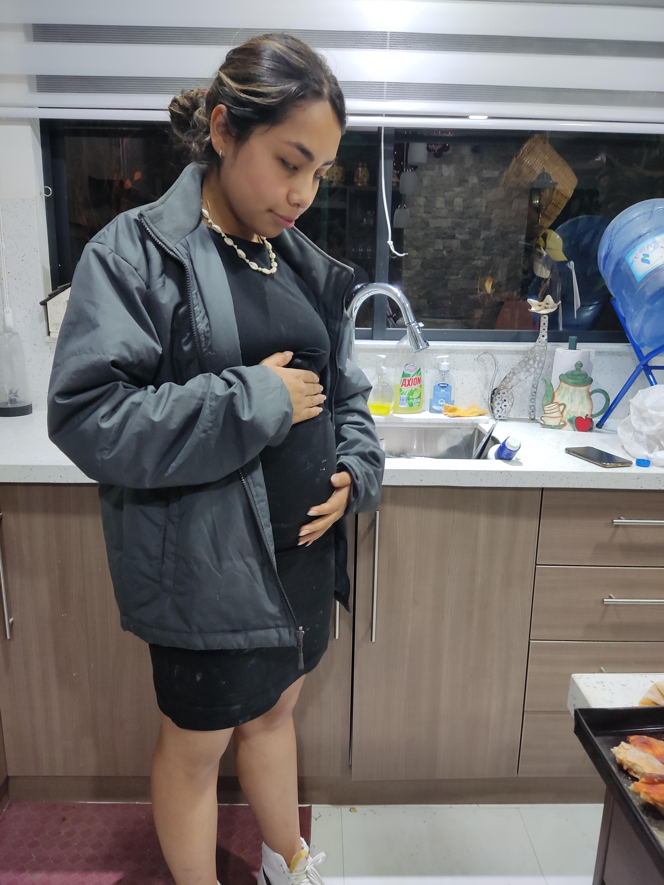
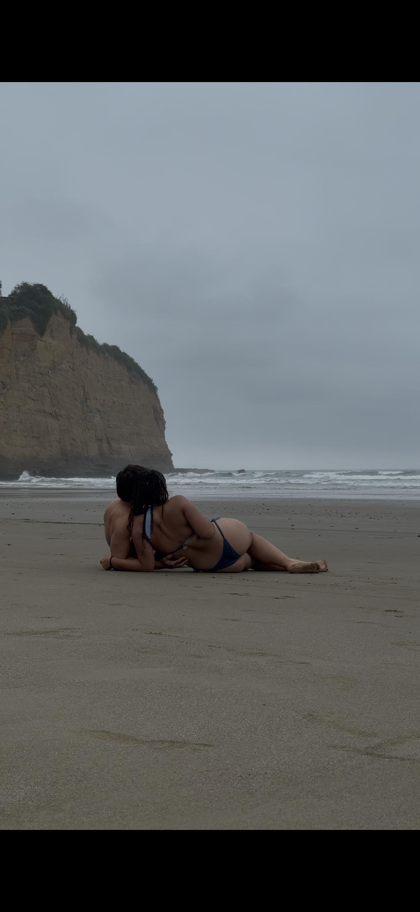
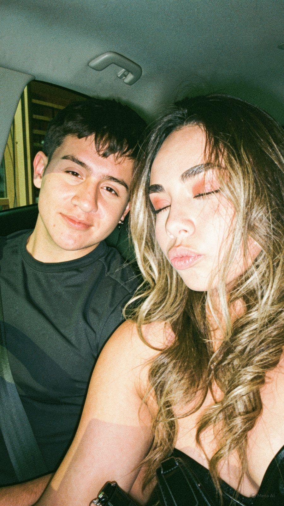

2022
El comienzo
"Aquí empezó algo que ninguno de los dos sabía hasta dónde iba a llegar."


4 años de nosotros
"Hay historias que empiezan con un momento.
La nuestra lleva cuatro años escribiéndose."
Lo hice porque después de cuatro años hay demasiadas cosas que quiero decirte y que a veces no sé cómo decirte en persona.
Así que decidí guardarlas aquí.
"Aquí empezó algo que ninguno de los dos sabía hasta dónde iba a llegar."


Aqui a prendi a quererte cada dia mas


Aqui aprendi a amarte


Una aventura unica


4 años después, sigo escogiendo tu mano.
0/100 rosas visitadas
Mi amor:
No sé exactamente cómo empezar esta carta, porque hay cosas que siento por ti que a veces no sé explicar con palabras. Y quizá después de cuatro años debería saber hacerlo mejor, pero justamente por eso quiero escribirte esto: sin intentar que suene perfecto, sin esconder mis errores y sin pretender ser alguien que no soy.
Solo quiero hablarte desde el corazón.
Hoy, mientras pienso en todo lo que hemos vivido, me doy cuenta de que nuestra historia ha sido mucho más grande que todos los momentos bonitos que cualquiera podría ver desde afuera. Hemos tenido días en los que todo parecía perfecto, pero también hemos tenido días difíciles, discusiones, diferencias, silencios, momentos en los que nos hemos lastimado y momentos en los que probablemente te preguntaste si yo realmente estaba entendiendo el valor de tenerte a mi lado.
Y quiero comenzar diciéndote algo que quizá debí decirte muchas veces antes:
Perdóname.
Perdóname por todas las veces que fui tonto.
Por las veces que no supe escucharte.
Por las veces que pude haber sido más paciente y no lo fui.
Por aquellas ocasiones en las que mis palabras, mis decisiones o mis actitudes te hicieron sentir mal.
Por las veces que no valoré un momento contigo como debía.
Por mis errores, por mis inmadureces, por mi orgullo y por todas esas cosas que hoy, viéndolas desde la distancia, quisiera haber hecho diferente.
No quiero pedirte perdón solamente porque es tu cumpleaños. Quiero hacerlo porque después de cuatro años he aprendido que amar a alguien no significa nunca equivocarse.
Significa también tener el valor de reconocer cuando uno se equivoca.
Y yo sé que me he equivocado.
Sé que no siempre fui el hombre que merecías en cada momento. Sé que hubo ocasiones en las que pude amarte mejor, cuidarte mejor, entenderte mejor y demostrarte mejor todo lo que significas para mí.
Y lo siento.
De verdad lo siento.
Pero también quiero que sepas algo:
A pesar de todos mis errores, nunca dejé de agradecerle a la vida por haberte puesto en mi camino.
Porque tú has estado ahí.
En mis días buenos y en mis días malos.
Cuando todo salía bien y cuando las cosas se complicaban.
Cuando tenía motivos para sonreír y cuando necesitaba simplemente a alguien que se quedara a mi lado.
Gracias por tu paciencia.
Gracias por escucharme.
Gracias por apoyarme.
Gracias por creer en mí incluso en momentos en los que quizá yo mismo no sabía cómo creer en mí.
Gracias por cada abrazo.
Por cada conversación.
Por cada risa.
Por cada preocupación.
Por cada detalle pequeño que quizás tú hiciste sin pensar demasiado y que para mí terminó significando muchísimo.
Gracias por todas las veces que me preguntaste si estaba bien.
Gracias por estar.
Porque muchas veces creemos que el amor está solamente en los grandes momentos, pero con los años he aprendido que también está en las cosas pequeñas.
En quedarse.
En preguntar.
En esperar.
En perdonar.
En compartir un silencio.
En reírse por una tontería.
En conocer las partes bonitas y también las partes difíciles del otro y, aun así, decidir seguir caminando juntos.
Y eso es algo que jamás quiero dar por sentado contigo.
A veces pienso en nosotros y recuerdo las palabras del Cantar de los Cantares.
Ese libro habla de un amor que mira al otro con admiración, que lo busca, que lo desea, que celebra su presencia y que no tiene miedo de decir:
“Mi amado es mío y yo soy suya.”
Y cuando pienso en ti, entiendo un poquito más esas palabras.
Porque después de cuatro años no solamente amo a la mujer de la que me enamoré al principio.
Amo también a la mujer que he conocido con el tiempo.
La que ha compartido conmigo días maravillosos y días complicados.
La que me ha visto en mis mejores momentos y también en aquellos en los que no fui mi mejor versión.
La que conoce mis defectos y aun así ha decidido quedarse.
Y quizá eso es lo que más valoro.
Que nuestro amor no nació solamente de momentos perfectos.
Nuestro amor aprendió a existir también en medio de nuestras imperfecciones.
Hemos pasado por cosas que alguna vez pensé que serían difíciles de superar.
Hemos tenido días en los que probablemente ninguno de los dos sabía muy bien qué decir.
Pero también hemos tenido momentos que quisiera guardar para siempre.
Risas que todavía recuerdo.
Lugares.
Conversaciones.
Abrazos.
Miradas.
Pequeñas aventuras.
Días normales que terminaron siendo especiales simplemente porque estaba contigo.
Y todos esos recuerdos forman algo que nadie puede quitarme:
nuestra historia.
Si pudiera volver al primer día en que comenzó todo, probablemente no cambiaría el hecho de haberte conocido.
Aunque pudiera advertirle a ese yo de hace cuatro años todas las cosas que iba a hacer mal, todos los errores que iba a cometer y todas las veces que iba a ser un tonto...
Aun así le diría:
“No tengas miedo. Ella vale la pena.”
Porque tú vales la pena.
Vale la pena aprender.
Vale la pena cambiar.
Vale la pena pedir perdón.
Vale la pena luchar.
Vale la pena seguir construyendo.
Y quiero que sepas que no quiero que estas palabras sean solamente bonitas.
Quiero que también sean una promesa de mi parte.
Quiero aprender de mis errores.
Quiero escucharte más.
Quiero cuidarte más.
Quiero celebrar tus triunfos como si fueran míos.
Quiero estar cuando estés feliz y cuando estés triste.
Quiero ser esa persona a la que puedas acudir cuando necesites hablar, llorar, reír o simplemente sentir que no estás sola.
No prometo ser perfecto.
Porque sé que nunca lo voy a ser.
Pero sí puedo prometerte que quiero seguir creciendo.
Quiero ser mejor para mí, pero también quiero ser mejor para nosotros.
Y ahora que estás cumpliendo un año más de vida, quiero agradecerte por haberme permitido formar parte de estos cuatro años.
Cuatro años.
Cuando lo digo parece solamente un número.
Pero detrás de ese número están cientos de días.
Miles de conversaciones.
Momentos buenos.
Momentos malos.
Risas.
Lágrimas.
Discusiones.
Reconciliaciones.
Abrazos.
Besos.
Planes.
Sueños.
Y tantos recuerdos que sería imposible escribirlos todos aquí.
Por eso están las rosas.
Cien rosas.
Durante estos años se han convertido en una tradición, pero esta vez quería que significaran algo diferente.
Porque una rosa no puede contar una historia.
Pero cien pueden recordarnos que una historia está hecha de cientos de pequeños momentos.
Y si pudiera darte una rosa por cada momento en el que me hiciste sentir amado, probablemente necesitaríamos muchas más.
Si pudiera darte una por cada vez que me ayudaste, necesitaríamos muchas más.
Si pudiera darte una por cada recuerdo que quiero conservar contigo, probablemente no existiría un ramo suficientemente grande.
Así que estas cien rosas no son cien razones.
Son simplemente cien pequeñas maneras de decirte:
Gracias por estos cuatro años.
Y quiero que recuerdes algo.
No sé qué nos espera.
No sé dónde estaremos dentro de cinco, diez o veinte años.
No sé cuántas cosas cambiarán.
No sé cuántos caminos tendremos que recorrer.
Pero sí sé algo:
Hoy te sigo eligiendo.
Después de conocer tus virtudes y tus defectos.
Después de conocer mis propios errores.
Después de haber vivido días maravillosos y días difíciles.
Después de cuatro años...
te sigo eligiendo.
Y espero que la vida nos permita seguir escribiendo nuestra historia.
Quiero conocer más lugares contigo.
Quiero descubrir nuevas cosas a tu lado.
Quiero tener más fotografías que algún día podamos mirar y decir:
“¿Te acuerdas de ese día?”
Quiero celebrar más cumpleaños contigo.
Más aniversarios.
Más viajes.
Más noches hablando de cualquier cosa.
Más mañanas.
Más abrazos.
Más momentos simples.
Más vida.
Cantar de los Cantares dice que “el amor es fuerte como la muerte”.
Y quizá eso es lo que he aprendido contigo:
Que el amor verdadero no se trata de que todo sea perfecto.
Se trata de que, aun cuando aparecen dificultades, existe algo que nos hace querer volver a encontrarnos.
Algo que nos hace querer entendernos.
Algo que nos hace querer quedarnos.
Y yo quiero seguir encontrando ese camino contigo.
Así que, mi amor...
Gracias.
Gracias por haberme amado incluso cuando no sabía cómo recibirlo.
Gracias por haberme acompañado.
Gracias por cada oportunidad.
Gracias por cada recuerdo.
Gracias por estos cuatro años.
Y perdóname por todo aquello que hice mal.
Ojalá algún día pueda mirar hacia atrás y sentir que cada uno de mis errores se convirtió en una oportunidad para aprender a amarte mejor.
Porque si hay algo que quiero que tengas claro después de leer esto, es que:
Te amo.
No solamente por cómo eres cuando todo está bien.
Te amo por la persona que eres.
Por tu corazón.
Por tu manera de querer.
Por tu forma de hacerme sentir acompañado.
Por todo lo que hemos construido.
Y por todo aquello que todavía nos falta construir.
Hoy te regalo cien rosas.
Pero si algún día me preguntaras qué es lo que realmente quiero regalarte...
Te diría que quiero regalarte mi esfuerzo por ser mejor.
Mi tiempo.
Mi compañía.
Mi lealtad.
Mi paciencia.
Mis sueños.
Mis mejores años.
Y, mientras la vida nos permita caminar juntos,
mi amor.
Feliz cumpleaños, mi amor.
Gracias por estos cuatro años.
Gracias por haber sido parte de mi historia.
Y gracias, sobre todo, por permitirme ser parte de la tuya.
Esta historia comenzó hace cuatro años.
Las cien rosas son para celebrar lo que hemos vivido.
Pero la verdadera razón por la que te las doy es porque todavía quiero descubrir contigo todo lo que nos falta vivir.
4 años.
100 rosas.
Miles de recuerdos.
Y todavía te elegiría a ti.
Feliz cumpleaños, mi amor. ❤️
— David
🌹 100/100
Porque este sitio no es solamente para tu cumpleaños.
Es para seguir guardando nuestra historia.
Continuará…